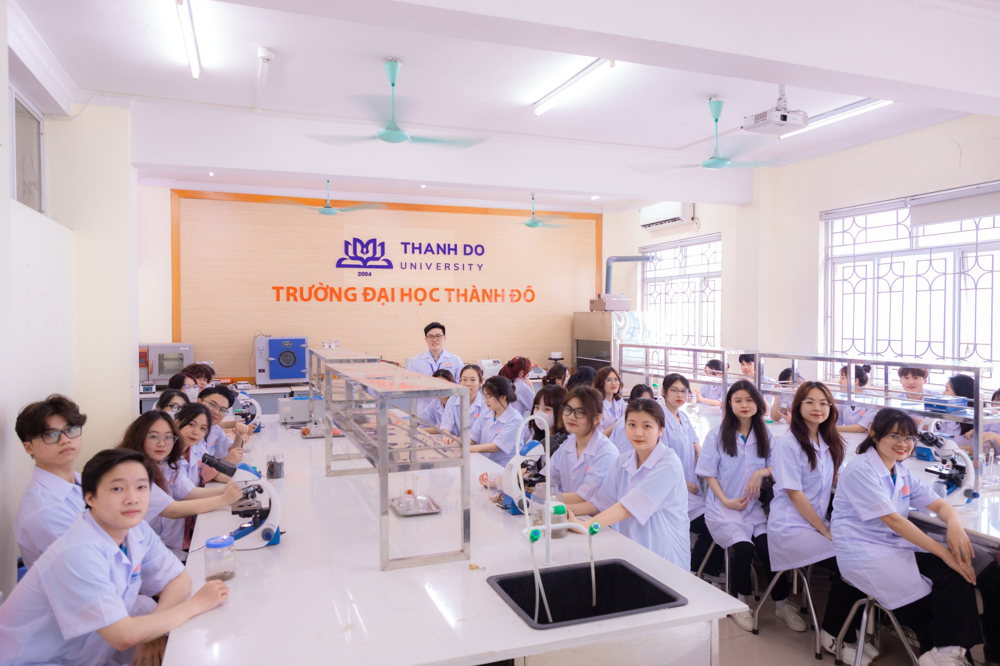
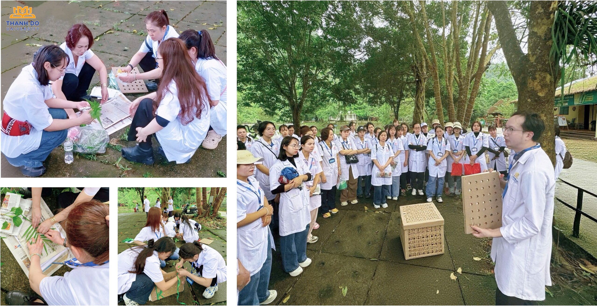
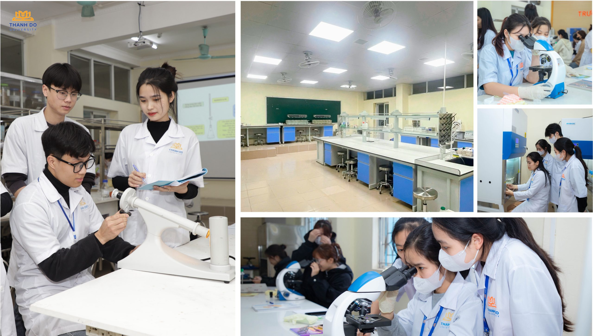
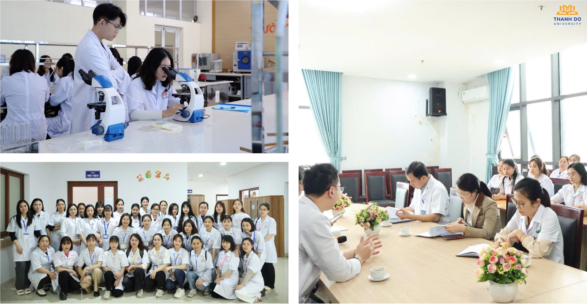
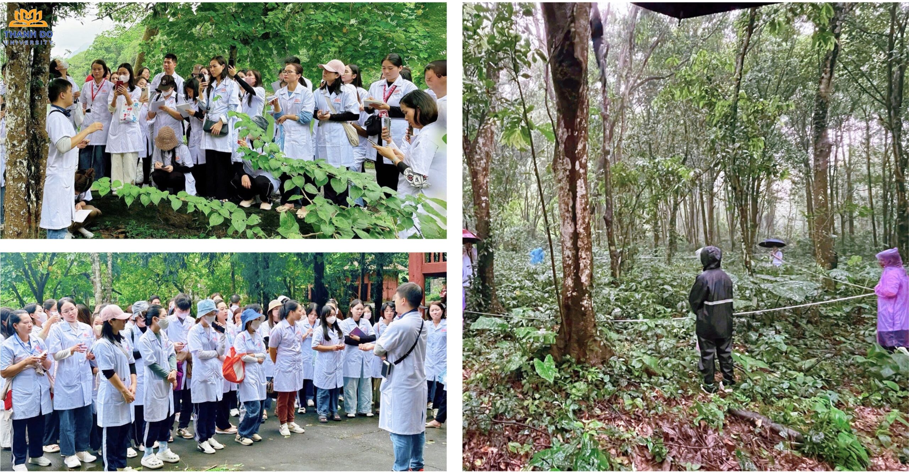

Dược học
Tổng quan
Dược học là lĩnh vực khoa học nghiên cứu về thuốc nhằm phục vụ cho việc phòng bệnh, chẩn đoán và điều trị bệnh. Ngành này bao gồm các hoạt động như nghiên cứu hoạt chất mới, bào chế và sản xuất thuốc, kiểm nghiệm chất lượng và hướng dẫn sử dụng thuốc an toàn, hợp lý. Dược sĩ đóng vai trò quan trọng trong hệ thống chăm sóc sức khỏe, góp phần nâng cao hiệu quả điều trị và bảo vệ sức khỏe cộng đồng.
Ngành Dược học có mối liên hệ chặt chẽ với nhiều ngành khoa học khác, đặc biệt là ngành Y, hóa học và sinh học. Ngành Y sử dụng thuốc trong điều trị bệnh, hóa học giúp nghiên cứu cấu trúc và tổng hợp hoạt chất, còn sinh học hỗ trợ tìm hiểu cơ chế tác động và chuyển hóa của thuốc trong cơ thể. Sự kết hợp của các lĩnh vực này góp phần thúc đẩy sự phát triển của Dược học và tạo ra nhiều loại thuốc mới phục vụ con người.
- Mã ngành: 7720201
- Định hướng đào tạo: Quản lý kinh tế Dược, Dược lý dược lâm sàng
- Thời gian đào tạo: Tùy thuộc vào đối tượng đầu vào (Trung cấp, Cao đẳng, Đại học)
- Trình độ đào tạo: Cử nhân
- Học phí: 370.000 đồng/1 tín chỉ


Chương trình đào tạo
Tổng số tín chỉ của chương trình đào tạo (Chưa tính các học phần Giáo dục thể chất, Giáo dục Quốc phòng – An ninh, tiếng Anh chuẩn đầu ra): 150 tín chỉ
- Kiến thức giáo dục đại cương: 28 tín chỉ
- Kiến thức giáo dục chuyên nghiệp: 95 tín chỉ
- Học kỳ doanh nghiệp: 20 tín chỉ
- Đồ án tốt nghiệp/Các học phần thay thế ĐATN: 7 tín chỉ
Mô tả chương trình đào tạo: Xem chi tiết tại đây

Triển vọng nghề nghiệp
Sau khi tốt nghiệp ngành Dược, sinh viên có thể làm việc trong nhiều lĩnh vực như sản xuất, phân phối thuốc, khoa dược bệnh viện, cơ quan quản lý dược, nhà thuốc và các cơ sở y tế công lập hoặc tư nhân. Ngoài ra, dược sĩ còn có thể tham gia giảng dạy, nghiên cứu khoa học, quản lý, tự kinh doanh hoặc học tiếp sau đại học.
Một số vị trí nghề nghiệp chính:
- Định hướng Quản lý và Kinh tế Dược:
- Bán lẻ và tư vấn sử dụng thuốc tại nhà thuốc.
- Cung ứng, phân phối thuốc; phân tích dữ liệu marketing và kinh tế dược tại các công ty dược.
- Làm việc tại khoa Dược của bệnh viện.
- Định hướng Dược lý và Dược lâm sàng
- Tư vấn sử dụng thuốc cho bệnh nhân và cán bộ y tế trong bệnh viện.
- Tư vấn thuốc tại nhà thuốc cộng đồng.
- Phân tích dữ liệu trong các thử nghiệm lâm sàng tại viện nghiên cứu.
- Các lĩnh vực khác:
- Quản lý nhà nước về Dược: làm việc tại Bộ Y tế, Cục Quản lý Dược, Sở Y tế.
- Nghiên cứu: tại các viện nghiên cứu, trường đại học, hoặc bộ phận R&D của công ty dược.
- Sản xuất thuốc: tham gia các bộ phận kinh doanh, đăng ký thuốc, QA, QC, R&D và các phân xưởng sản xuất.
- Đào tạo: giảng dạy tại các cơ sở đào tạo ngành Dược (cần học sau đại học để giảng dạy ở đại học).

